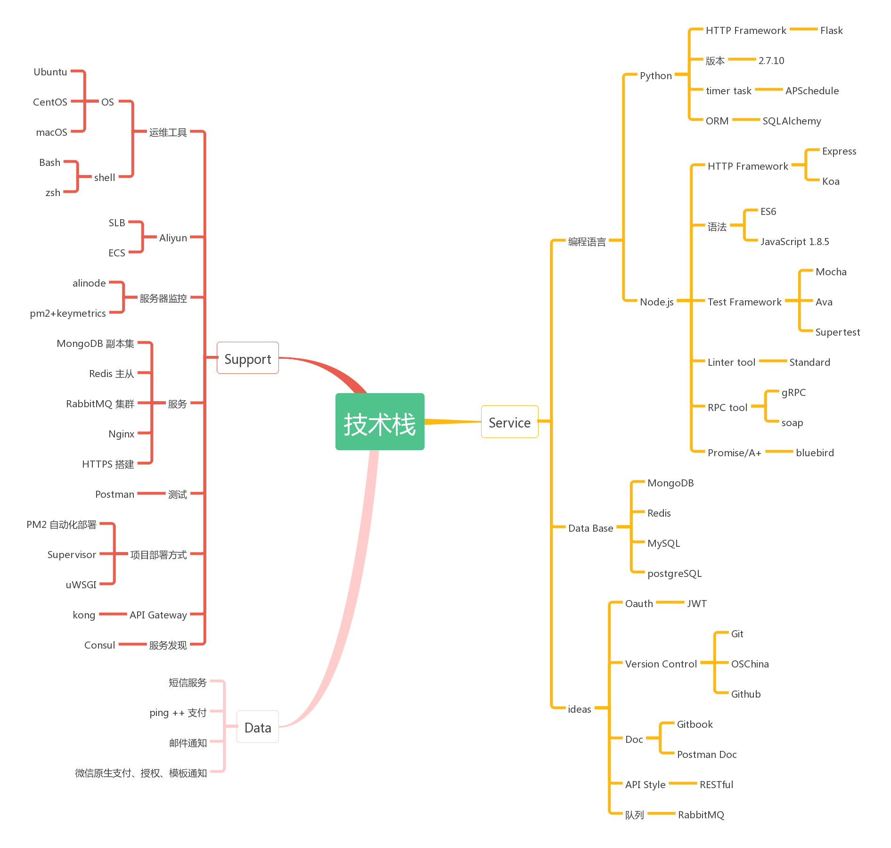

我的信息
| 姓名 | 赵兴越 |
|---|---|
| 性别 | 男 |
| 出生日期 | 1993.02.28 |
| 学历 | 本科 |
| 大学 | 齐齐哈尔大学 |
| 专业 | 物联网工程 |
| 籍贯 | 黑龙江省海伦市 |
| 联系电话 | 17702289729 |
| onlynode@qq.com | |
| 微信 | 974445496 |
基本技能
- 熟练掌握 Node.js 语法（ES6）、熟练使用Express/Koa
- 熟练掌握 Promise/A+ 规范及 bluebird 库的使用，熟练掌握ES7 Async/Await
- 掌握Python及Flask使用
- 掌握Java语法、SSH框架使用、maven
- 熟练掌握 MongoDB，副本集部署/聚合运算/mongoose
- 掌握Postgresql/Mysql 关系型数据库使用
- 熟练掌握Redis的使用/部署/使用场景
- 熟练掌握RabbitMQ队列的使用/集群部署/使用场景
- 掌握gRPC/soap
- 熟练掌握Git/Github/OSchina
- 熟练掌握Linux 下项目部署及运维
项目经验
小斑马科技
后台开发 | 2015/10/15 ~ 至今
优蛋商城(Python)
该项目开发周期为 2 个月，自己独立使用Python 语言开发，该项目类似于微店、分为买家端、卖家端，编写该项目时对Python一点都不懂，一周时间学习，然后开始项目编写工作，一路踩着坑过来，收益颇丰，截止离职时该项目上线完成。其中使用到的技术有Flask/SQLAlchemy/APScheduler/uWSGI/Supervisor/Postgresql/Redis/RabbitMQ，该项目对我来讲是一个历练的过程，我喜欢挑战和学习新的东西，学习后端语言的好处是一通则全通，从学习、开发、上线的过程中体验到学习和挑战的乐趣。
CRM
该项目为公司内部销售人员使用的客户管理系统。该项目使用 ES7 node7 + Async/Await + Promise 编写，该项目较小，在编写过程中学习到ES7 语法及 Async/Await 用法。
小斑马货栈(Node.js)
小斑马货栈是服务于中小电商卖家的产品。该项目使用Node.js + MongoDB + Express，采用微服务架构，该项目拆分为订单模块、用户模块、库存模块。模块之间通信使用 gRPC， 代码格式校验使用standard，单元测试使用Ava，部署使用SLB + Nginx + PM2 的部署形式，并发能力强。出库、入库等耗时高，并发高的操作放入RabbitMQ队列中，该项目我作为主要开发人员全程参与架构设计、代码开发、单元测试、部署维护。
商城系统(Node.js)
该商城系统为微商团队提供0元购服务。该项目使用微信原生授权、支付 + Node.js + MongoDB + Express，该系统日均单量2w ~ 3w，交易峰值为5分钟1.2w单。该项目后端迭代、重构均由我一人完成。项目文档均使用Gitbook 编写。
第三方平台对接(Node.js)
对接平台有微店、淘宝、易订货、WMS系统，在这些平台对接中了解到 OAuth2.0 相关技术，以及SOAP 请求方式。该项目使用 ES6 语法编写，使用babel 转换，PM2 自动化部署，大量使用Promise/A+ bluebird API。
天津创天网络科技有限公司
后台开发 | 2014/09 ~ 2015/06
- 享逛二期APP(Java)
这个项目是我在工作中第一个实战的项目，从中学习到了很多后台开发及Java相关技能。在项目中接触到了缓存技术，负载，以及如何使用 json 数据在前后端进行通信，理解了前后端分离的工作机制。我主要负责百宝箱模块，每天定时开奖，定时结束的一个抽奖环节。用户每天在规定的时间内进行报名参加，然后等到开奖时按照后台设置奖品的数量和新老用户之间的不同的中奖概率（3：1）进行中奖概率处理。该模块的难点是需要将参与抽奖的用户进行缓存处理，当到了开奖时间时进行新老用户、奖品数量之间的关系进行运算。最终得出中奖用户，然后再进行中奖消息推送告知用户中奖。
开源项目及作品
- wechat-template
该项目功能在于对目标微信进行通知，可以用于用户微信消息推送、异常报警。
- easymd
该项目是命令行工具，可以将指定 Markdown 文件转化为 HTML 文件，或者将 Markdown 文件在浏览器中进行预览。项目地址: https://github.com/zhaoxingyue/easymd
- 《Developing a gulp Edge》翻译
2016年时业余时间对《Developing a gulp Edge》进行翻译，我负责该书的前三章翻译工作。出版时间待定。
- 参加2016年南京JSConf 大会
- 参加2016年天津谷歌开发者大会
个人评价
- 热爱开源、热爱新技术、热爱团队，热爱分享
- 学习能力强、责任心强，对代码质量要求较高
技术栈
